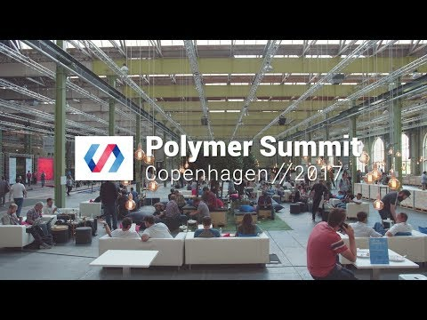
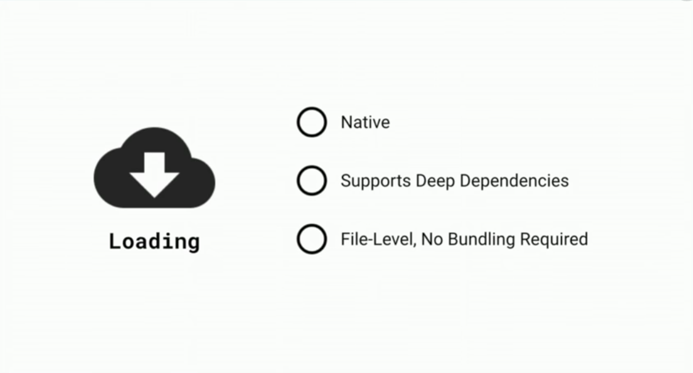
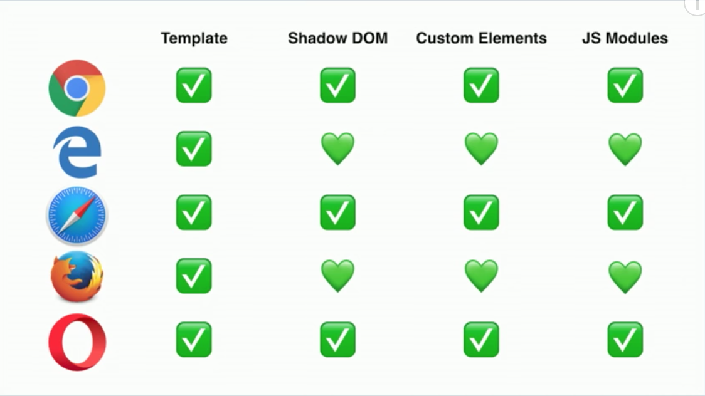

Intro
Frank Wijmans
Willem Veelenturf

Why ?
Mission of the Polymer team
#usetheplatform
Three big changes
Bower to npm
Html imports to Javascript ES modules
Polymer 3.0
Moving from bower to npm
Html imports to Javascript ES module

